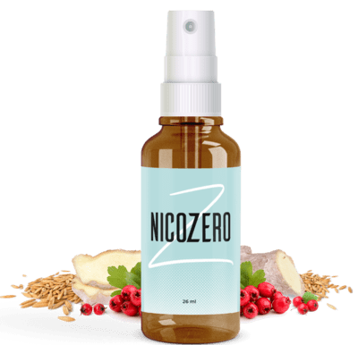

Das ganze Leben lang rauchen und an nur einem Tag aufhören - ist einfach!

Andie Mitchell,
Soweit ich mich erinnern kann, habe ich geraucht. Und ganze 35 Jahre habe ich geraucht. An meinem 44 Geburtstag habe ich beschlossen plötzlich damit aufgehört. Natürlich nicht mit Hilfe eines Zauberstabs, aber dennoch schnell und mühelos. Diese Methode eignet sich selbst für die faulsten Menschen.

Angefangen zu rauchen habe ich aus reiner Dummheit
Meine erste Zigarette habe ich im Alter von 14 Jahren geraucht. Wie alle Raucher konnte ich mir nicht einmal vorstellen, was ich tue.
Anfangs war es nur ein Spiel, doch dann hat man mir beigebracht richtig zu rauchen. Etwas später, als wir mit der ganzen Familie im Urlaub gewesen sind, musste ich auch noch den Rauchentzug überwinden.
Weder die Prügel meiner Mutter wegen gefundener Zigarettenschachteln, noch herzzerreißende Videos über schwere Todesfälle von Rauchern oder Passantenblicke auf der Straße, die mich auf der Straße mit einer Zigarette im Mund gesehen haben, haben mir nicht geholfen diese schlechte Angewohnheit loszuwerden.

Nach der Schule hatte ich noch mehr Freiheit. An der Uni habe ich geraucht, was das Zeug hält. Insgesamt habe ich bis zu zwei Packungen am Tag geraucht.
Ich stank ständig nach Tabak. Sowohl meine Haare, als auch meine Kleidung sind so heftig nach Zigaretten gestunken, sodass mich nicht einmal Chanel retten konnte. Sogar mein Puderschwamm hat nach Tabak gestunken.
Mir war alles Bewusst, aber ich war völlig machtlos. Gute Laune – ich geh mal eine rauchen, schlechte Laune - ich geh mal eine rauchen!
Zigaretten haben mich gerettet und gleichzeitig zerstört. Meine Haut hat sich verschlechtert, meine jugendliche Akne ist noch schlimmer geworden. Darüber hinaus habe ich auch noch Falten bekommen, die mich um 5 Jahre älter machten.
Ich habe gelbe zähne bekommen und meine Freunde weigerten sich mehrmals mich wegen schlechtem Atem zu küssen. Ich habe Komplexe bekommen.
Das ganze Ausmaß dieses Problems erkannte ich erst mit 30. Dieser ständige Geruch und die Nervosität, als es keine Möglichkeit zu rauchen gab. Ich hatte das alles so satt, dass ich das erste Mal im Leben beschlossen habe mit dem Rauchen aufzuhören.

Ich weiß gar nicht wie viel Willenskraft man braucht, um ohne fremde Hilfe diese Sucht zu überwinden. Nach zwei Monaten ohne Rauchen habe ich einen Psychologen aufgesucht, der mir aber überhaupt nicht helfen konnte.
Jeder Tag dieser zwei Monaten schien eine Art Test zu sein. Ich habe angefangen alles zu essen, was ich zuhause hatte und habe deshalb natürlich angefangen an Gewicht zuzunehmen.
Ich war immer schlecht gelaunt! Die neue Frisur meiner Arbeitskollegin, lauter Atem des Buchhalters, blöde Menschen in der U-Bahn. Es hat mich einfach alles angepisst.
Nervenversagen und Selbsthass
Es war überhaupt keine Erleichterung zu spüren. Deshalb hatte ich eines Tages keine Kraft mehr und habe mir letztendlich eine Packung Zigaretten gekauft, da ich es nicht mehr aushalten konnte.
Die erste Zigarette schmeckte wirklich ätzend, aber ich konnte nicht aufhören und habe voller Gier und Freude geraucht.
Ich verachtete, hasste und bemitleidete mich zugleich. Die Nikotinsucht machte einen Sklaven aus mir. Zigaretten haben mir geholfen weniger zu essen und sich besser unter Menschen zu fühlen. Als ich aber unter Nichtrauchern gewesen bin, fühlte ich mich unwohl und meinte ständig, dass ich nur ab und zu mal eine Zigarette anzünde.
Ich habe natürlich mehrmals versucht mit dem Rauchen aufzuhören. Ich habe alle möglichen Medikamente aus der Apotheke, Ayurveda und sonstige Schamanensachen ausprobiert aber das einzige, was ich letztendlich bekommen habe, war eine leere Brieftasche und verlorene Hoffnungen. Ich habe mir sändig gedacht, dass ich noch ein bisschen rauchen und damit aufhören werde.

Ein neuer Mitarbeiter hat uns abgewöhnt eine Rauchpause einzulegen
Ich hatte nicht mehr den Wunsch mit dem Rauchen aufzuhören. Doch dann bekamen wir einen neuen Arbeitskollegen, der eine persönliche Methode hatte, um mit dem rauchen aufzuhören.
Anfangs habe ich alle Gespräche darüber ignoriert. Was könnte mir dieser freche junge Mann schließlich neues erzählen?
Wie es sich später herausgestellt hat, habe ich mich doch noch geirrt. Über die Existenz eines Sprays, das die Arbeit von Neurotransmittern anregt und das Verlangen nach Rauchen vollständig blockiert, habe ich noch nie gehört.
Etwas später hat mich Stefan doch noch dazu gebracht ihm zuzuhören und hat mir über erzählt. Dieses Medikament ist etwas ganz anderes, als man mir jahrelang mitfühlend in der Apotheke verkaufte.
Es handelt sich um eine Entwicklung belgischer Wissenschaftler, die sich mehr als 10 Jahre lang mit der Entwicklung dieses Sprays befassten. Im Gegensatz und den Mitteln aus der Apotheke, enthält es überhaupt kein Nikotin. Dafür enthält es Gotu Kola, Ginseng und Chicorée, die das Verlangen nach Rauchen hemmt.
Weitere Details könnt ihr euch in Ruhe auf der Webseite des Herstellers durchlesen. In der Praxis war alles wie in einem Märchen.
Wie habe ich letztendlich aufgehört zu rauchen
Ich habe angefangen zu verwenden und hoffte auf ein Ergebnis. Dabei war ich mir aber sicher, dass selbst wenn ich aufhöre zu rauchen, werde ich bald wieder damit anfangen. Plötzlich habe ich aber bemerkt, dass ich anstatt zwei Packungen am Tag, nur noch eine pro Wochen geraucht habe.
Ich kann mich noch genau an den Gedanken erinnern: Warum rauche ich jetzt, ich will es doch gar nicht mehr. Mit jedem Zug wurde mir klar, dass Tabakrauch widerlich ist und ich nicht mehr rauchen möchte!
Ich hatte noch eine Packung übrig, „für alles Fälle“ sozusagen. Doch dieser Fall ist niemals eingetreten. In der ersten Zeit habe ich noch aus Gewohnheit nach einer Zigarette gegriffen und sie anschließend wieder in die Tasche gelegt.
Ich habe angefangen wieder angenehme Gerüche wahrzunehmen und meine Lunge war voller sauberer Luft. Ich habe plötzlich bemerkt, dass sich um mich herum viele angenehme Dinge befinden.
Dabei wusste ich es noch früher, hatte aber immer Angst davor, dass ich dieses starke Verlangen nicht durch etwas ersetzen könnte. Wer hätte gedacht, dass mir helfen wird meine Weltanschauung zu ändern!

Ich rauche schon seit dem Moment nicht mehr, als ich erkannt habe, dass ich abhängig bin. Seitdem sehe ich viel frischer, hübscher geworden und habe mich sogar angefangen viel besser zu fühlen. Das wichtigste ist, dass ich jetzt endlich ausschlafe!
Nichtraucher zu sein ist ein echtes Glück. Wenn Sie möchten, könnt ihr auch ausprobieren. Dieses Mittel wird Ihr Leben unbedingt verändern.


Marie Schneider
Hat jemand wirklich noch nicht von gewusst?
Anna Pohl
In den USA wird von Ärzten verschrieben. Ich hoffe, dass man dieses Problem bei uns auch bald ernst nehmen wird.
Mia Bergmann
Ich persönlich habe auch mit Hilfe von aufgehört zu rauchen. Im Vergleich zu Nikotinkaugummis, Pflastern und Sprays ist es einfach ein Wundermittel! Ich habe vor 7 Monaten aufgehört zu rauchen und habe überhaupt nicht wieder geraucht.
Jens Ziegler
Hilft es wirklich? Möchte kein Geld wieder aus dem Fenster werfen
Michael Behr
Meiner Meinung nach ist das die beste Investition des Lebens. Denn anschließend wird man kein Geld mehr für Zigaretten ausgeben. Ich spare jetzt das Geld, das ich früher für Zigaretten ausgegeben hätte und habe jetzt schon um die 800 Euro gespart ))
Thomas Frank
Nicht schlecht. So krieg man am ende sogar für ein Auto zusammengespart. Tritt die Wirkung wirklich so schnell ein?
Simon Jäger
Ich habe seit meinem 7 Lebensjahr angefangen zu rauchen. Dachte immer, dass ich immer damit aufhören könnte. Aber irgendwie ist es mit nicht gelungen. Selbst als es einen Verdacht auf Krebs gab, konnte ich nicht damit aufhören. Gott sei Dank, dass meine Frau auf gestoßen ist und es für mich gekauft hat. Ich erwartete zwar kein Wunder, habe aber dennoch beschlossen es auszuprobieren. Anschließend habe ich angefangen immer weniger zu rauchen, da ich es ganz einfach vergessen habe. Etwa später habe ich vergessen mir eine neue Packung zu kaufen und habe schließlich damit vollständig aufgehört. Nun bin ich seit anderthalb Jahren Nichtraucher. Wenn ich noch aufhören würde Bier zu trinken.
Louise Roth
Leute, das ist einfach ein Wundermittel!!! Ich habe bereits so viel Geld für unterschiedliche Mittel ausgegeben! Meine Haare, die Kleidung und meine Hände sind ständig gestunken… obwohl ich das selbst ekelhaft fand, konnte ich nicht mit dem rauchen aufhören. Gott sei Dank haben Wissenschaftler erfunden!!
Jakob Lehmann
Hat noch jemand ausprobiert, ist wie es?
Holger Keller
Das hängt davon ab, wie lange man schon geraucht hat. Wir haben mit Freunden ein Experiment durchgeführt. Mir ist nach einer Woche schlecht von Zigarettengeruch geworden, meine Freunde haben nach etwa 10 Tagen aufgehört zu rauchen. Habe etwa einen Monat lang eingenommen. Dabei habe ich 35 Jahre lang geraucht.
Jürgen Fuchs
Habe mir sofort paar Stück bestellt, hoffe es wird helfen. Heute ist übrigens der letzte Aktionstag. Morgen wird sich der Preis erhöhen.
Ben Schumacher
Ich habs noch geschafft!!! Warte nun auf das Paket. Mir wurde versprochen, dass es schnell ankommt. Endlich werde ich aufhören zu rauchen und mir das Geld für Thailand zurücklegen))))